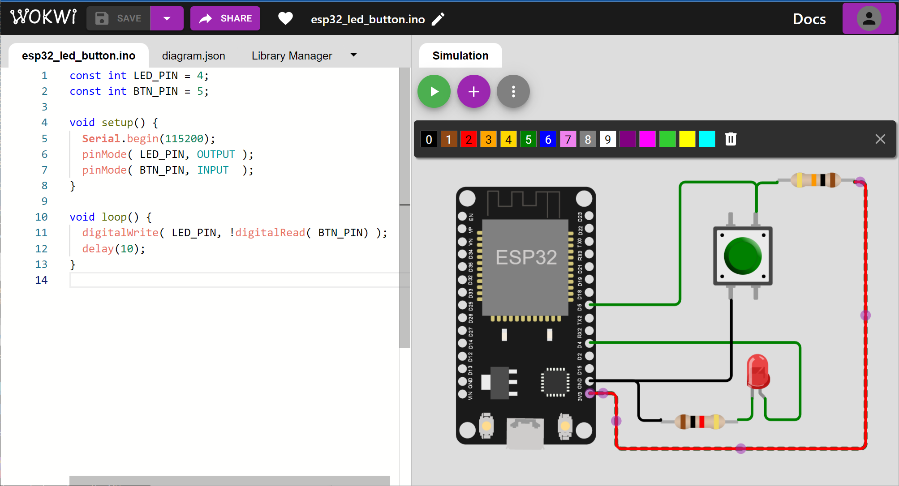

การเขียนโปรแกรมไมโครคอนโทรลเลอร์ Arduino-ESP32 ด้วย Wokwi Simulator (ตอนที่ 2)#
▷ Wokwi - Electronic Components#
บทความนี้นำเสนอซอฟต์แวร์ Wokwi Online Simulator สำหรับการเขียนโค้ดด้วยภาษา C/C++ และสร้างวงจรเสมือนจริงที่มีบอร์ดไมโครคอนโทรลเลอร์ ESP32 และอุปกรณ์อิเล็กทรอนิกส์พื้นฐานต่าง ๆ
นอกจากบอร์ดไมโครคอนโทรลเลอร์ที่มีให้เลือกใช้งานได้หลายแบบแล้ว ยังมีรายการอุปกรณ์ชิ้นส่วนหรือโมดูลอิเล็กทรอนิกส์อีกหลายประเภท ให้เลือกใช้งานได้ และนำมาต่อวงจรเสมือนจริง
รูป: เริ่มต้นโปรเจกต์ใหม่ใน Wokwi Online Simulator โดยเลือกใช้บอร์ด ESP32
ถ้าต้องการเพิ่มอุปกรณ์อิเล็กทรอนิกส์จากรายการ เพื่อนำมาต่อใช้งานเสมือนจริงกับบอร์ด ESP32 ก็ให้กดปุ่ม (+) เพื่อเลือกอุปกรณ์

รูป: รายการอุปกรณ์อิเล็กทรอนิกส์ใน Wokwi Online Simulator
รูป: รายการอุปกรณ์อิเล็กทรอนิกส์ที่สามารถเลือกใช้ได้
ข้อสังเกต: แม้ว่า Wokwi Simulator สามารถจำลองการทำงานของวงจรอิเล็กทรอนิกส์ได้ แต่มีข้อจำกัดในการจำลองการทำงานของวงจรอิเล็กทรอนิกส์แบบแอนะล็อก (เนื่องจากไม่ได้ใช้ตัวจำลองการทำงานของวงจรด้วย SPICE Circuit Simulator)
▷ LED + Push Button#
ถัดไปลองมาดูตัวอย่างการต่อวงจร LED และปุ่มกด (Push Button) พร้อมตัวต้านทาน เพื่อใช้งานร่วมกับบอร์ด ESP32
รูป: ตัวอย่างการเลือกอุปกรณ์มาต่อวงจรร่วมกับบอร์ด ESP32
ถ้าหากดูรายการในไฟล์ diagram.json ของโปรเจกต์ ในส่วนที่เรียกว่า
"parts": [ ... ] จะเห็นรายการอุปกรณ์ที่ได้เลือกมาต่อวงจร
ซึ่งภายในเป็นข้อความแบบ JSON String Format
จากรูปตัวอย่าง อุปกรณ์ "wokwi-led" มี "id" (Instance ID)
เท่ากับ "led1" มีพิกัดหรือตำแหน่งสำหรับการวาดรูป "top" และ "left"
ในบริเวณที่เป็น Drawing Canvas
และมี "attrs" สำหรับรายการคุณสมบัติของอุปกรณ์ เช่น "color" ที่มีค่าเท่ากับ
"red" ซึ่งหมายถึง หลอดแอลอีดี (5mm.) มีสีแดง เป็นต้น
อุปกรณ์ "wokwi-pushbutton" มี "id" (Instance ID)
เท่ากับ "btn1" มีพิกัดหรือตำแหน่งสำหรับการวาดรูปในบริเวณที่เป็น Drawing Canvas
ที่ถูกกำหนดโดย "top" และ "left" และมี "attrs"
สำหรับรายการคุณสมบัติเฉพาะสำหรับแต่ละอุปกรณ์
เช่น "color" ที่มีค่าเท่ากับ
"green" ซึ่งหมายถึง ปุ่มกด (12mm. Tactile Switch) มีสีเขียว เป็นต้น
{
"type": "wokwi-led",
"id": "led1",
"top": -64.48,
"left": -162.47,
"attrs": { "color": "red" }
},
{
"type": "wokwi-pushbutton",
"id": "btn1",
"top": 17.96,
"left": -177.91,
"attrs": { "color": "green" }
},
นอกจากนั้นยังมีตัวต้านทาน "wokwi-resistor" อีกสองตัว ได้แก่
"id" เท่ากับ "r1" และ "r2" ตามลำดับ
และมีการกำหนดค่าให้สำหรับ "value" เท่ากับ "1000" (โอห์ม) ซึ่งจะใช้เป็นตัวต้านทานจำกัดกระแสสำหรับ LED
และ "10000" (โอห์ม) ซึ่งจะใช้สำหรับเป็นตัวต้านทานแบบ Pullup สำหรับปุ่มกด
และมีการหมุน "rotate" เป็นองศาเท่ากับ 0 และ 90 ตามลำดับ
{
"type": "wokwi-resistor",
"id": "r1",
"top": -39.15,
"left": -92.53,
"rotate": 0,
"attrs": { "value": "1000" }
},
{
"type": "wokwi-resistor",
"id": "r2",
"rotate": 90,
"top": 36.33,
"left": -86.46,
"attrs": { "value": "10000" }
}
รายละเอียดเพิ่มเติมสำหรับการใช้งานอุปกรณ์ทั้งสามประเภท สามารถดูได้จาก
เมื่อได้เลือกอุปกรณ์ต่าง ๆ มาวางในพื้นที่วาดรูปวงจรแล้ว ถัดไปเป็นการลากสายสัญญาณหรือสายไฟ เพื่อเชื่อมต่อขาของอุปกรณ์ให้เป็นวงจรที่ถูกต้อง ใช้เมาส์คลิกเลือกขาที่เป็นจุดเริ่มต้นแล้วเลื่อนไปยังตำแหน่งของ ขาของอุปกรณ์ปลายทาง ตามรูปตัวอย่างดังนี้

รูป: ตัวอย่างการเชื่อมต่อขาของอุปกรณ์ต่าง ๆ ให้เป็นวงจร (Wiring)
ถ้าลองดูในไฟล์ diagram.json ของโปรเจกต์ จะเห็นว่า มีส่วนที่มีชื่อว่า "connections"
ซึ่งมีข้อความตามตัวอย่างดังนี้
{
"connections": [
[ "esp:TX0", "$serialMonitor:RX", "", [] ],
[ "esp:RX0", "$serialMonitor:TX", "", [] ],
[ "esp:D4", "led1:A", "green", [ "h159.26", "v58.52", "h-26.45" ] ],
[ "led1:C", "r1:2", "green", [ "v0" ] ],
[ "r1:1", "esp:GND.1", "black", [ "v0.69", "h-16.83", "v-30.14" ] ],
[ "esp:3V3", "r2:1", "red", [ "v-0.07", "h19.89", "v42.06", "h188.97", "v-200.9" ] ],
[ "r2:2", "btn1:1.l", "green", [ "v0.69", "h-15.8" ] ],
[ "btn1:2.r", "esp:GND.1", "black", [ "v0" ] ],
[ "esp:D5", "btn1:1.l", "green", [ "h68.23", "v-92.96", "h-1.88" ] ]
]
}
เมื่อต่อวงจรได้ครบถ้วนแล้ว ถัดไปลองเขียนโค้ดตามตัวอย่างต่อไปนี้ โดยมีขั้นตอนการทำงานดังนี้
- ขา LED_PIN และ BTN_PIN เป็นขา 4 (D4) และ 5 (D5) บนบอร์ด ESP32
- คำสั่ง
pinMode( LED_PIN, OUTPUT );ทำให้ขาLED_PINเป็นเอาต์พุตแบบดิจิทัล - คำสั่ง
pinMode( BTN_PIN, INPUT );ทำให้ขาBTN_PINเป็นขาอินพุตแบบดิจิทัล - คำสั่ง
digitalWrite( LED_PIN, !digitalRead( BTN_PIN) );ทำหน้าที่คอยอ่านค่าลอจิกจากขาBTN_PINเป็นอินพุต เมื่อได้ค่ามาแล้ว ก็นำมากลับค่าลอจิก ก่อนนำไปใช้กำหนดค่าลอจิกที่ขาLED_PINเป็นเอาต์พุต ประโยคคำสั่งนี้อยู่ในฟังก์ชันloop()ดังนั้นจึงมีการทำซ้ำไปเรื่อย ๆ โดยเว้นระยะเวลา 10 มิลลิวินาที ด้วยคำสั่งdelay(10);ก่อนทำซ้ำในแต่ละครั้ง
เอกสารสำหรับคำสั่งและการเขียนโค้ด Arduino สำหรับ ESP32 สามารถศึกษาได้จาก: "ESP32 Arduino Core’s documentation" และ "Wokwi - ESP32 Simulation Guide"
const int LED_PIN = 4; // D4 pin
const int BTN_PIN = 5; // D5 pin
void setup() {
Serial.begin(115200);
pinMode( LED_PIN, OUTPUT );
pinMode( BTN_PIN, INPUT );
}
void loop() {
// Read the input value from the button pin,
// write the inverted input value to the output LED pin.
digitalWrite( LED_PIN, !digitalRead( BTN_PIN) );
delay(10);
}
รูป: การจำลองการทำงานของวงจรและโค้ดที่ได้เขียนไว้
โดยทั่วไปแล้ว วงจรภายในไมโครคอนโทรลเลอร์ สำหรับแต่ละขาของ GPIO (General-Purpose I/O) มีตัวต้านทานอยู่ภายใน สามารถเลือกใช้งานเป็นตัวต้านทานแบบ Pullup ได้ ดังนั้นถ้าใช้ตัวต้านทานภายใน ก็ไม่จำเป็นต้องต่อตัวต้านทานภายนอก แต่จะต้องใช้คำสั่งของ Arduino ดังนี้สำหรับการเขียนโค้ด
คำสั่งนี้ใช้งานขา GPIO ตามที่กำหนด เป็นขาอินพุตแบบดิจิทัล แต่ไม่ใช้ตัวต้านทานภายใน ดังนั้นต้องต่อตัวต้านทานภายนอก (External Pullup)
pinMode( BTN_PIN, INPUT );
คำสั่งนี้ใช้งานขา GPIO ตามที่กำหนด เป็นขาอินพุตแบบดิจิทัล แต่เปิดใช้งานตัวต้านทานภายในแบบ Internal Pullup
pinMode( BTN_PIN, INPUT_PULLUP );
หากลองแก้ไขวงจรใหม่ โดยไม่ใช้ตัวต้านทาน Pullup ที่ขาสำหรับปุ่มกด และลองปรับเปลี่ยนรูปแบบการเขียนใหม่ เช่น ให้มีการแสดงข้อความเมื่อสถานะหรือค่าลอจิกของอินพุตมีการเปลี่ยนแปลง ก็มีแนวทางตามตัวอย่างดังนี้
const int LED_PIN = 4;
const int BTN_PIN = 5;
void setup() {
Serial.begin(115200);
pinMode( LED_PIN, OUTPUT );
// Use the internal pullup resistor on GPIO pin.
pinMode( BTN_PIN, INPUT_PULLUP );
}
int saved_value = HIGH; // Used to save the last changed value.
void loop() {
// Read the input value from the button pin.
int value = digitalRead( BTN_PIN );
if ( saved_value != value ) {
// Show the input value.
Serial.printf( "Input value changed: %d\n", value );
// Save the new input value.
saved_value = value;
}
// Write the inverted input value to the output LED pin.
digitalWrite( LED_PIN, !value );
delay(10);
}
รูป: การแก้ไขวงจรและโค้ดตัวอย่าง
อีกแนวทางหนึ่งในการเขียนโค้ดคือ การเปิดใช้งานอินเทอร์รัพท์ภายนอก (External Interrupt) ที่ขาอินพุต
โดยใช้คำสั่ง attachInterrupt(...)
ของ Arduino API ซึ่งสามารถนำมาใช้ได้กับ Arduino-ESP32
ในตัวอย่างโค้ดต่อไปนี้ ถ้ามีการเปลี่ยนแปลงสถานะลอจิก (Change) ที่ขาอินพุต I0 หรือ I1 ได้ทั้งสองกรณีคือ
ขอบขาขึ้น (Rising Edge) และขอบขาลง (Falling Edge )
จะถือว่า มีเหตุการณ์ที่เป็นอินเทอร์รัพท์จากภายนอก และจะทำให้ฟังก์ชันที่ทำหน้าที่ตอบสนองต่อเหตุการณ์ดังกล่าว
ซึ่งในตัวอย่างคือ ฟังก์ชัน isr() ทำงานโดยอัตโนมัติ เพื่ออ่านค่าอินพุตของขา I0 และ I1 และอัปเดทค่าของเอาต์พุต O
const int LED_PIN = 4;
const int BTN_PIN = 5;
void isr() {
int value = digitalRead( BTN_PIN );
digitalWrite( LED_PIN, !value );
}
void setup() {
Serial.begin(115200);
pinMode( LED_PIN, OUTPUT );
// Use the internal pullup resistor on GPIO pin.
pinMode( BTN_PIN, INPUT_PULLUP );
attachInterrupt( digitalPinToInterrupt(BTN_PIN),
isr, CHANGE /* Any change */ );
}
void loop() {}
▷ โจทย์ฝึกปฏิบัติข้อที่ 1#
การสร้างสัญญาณเอาต์พุตดิจิทัลที่เปลี่ยนสถานะลอจิกตามสัญญาณอินพุต
- เลือกใช้ขาดิจิทัลของบอร์ดไมโครคอนโทรลเลอร์ ESP32 ตามความเหมาะสม ใช้ 2 ขา โดยให้ขาที่หนึ่งเป็นอินพุตและ
ขาที่สองเป็นเอาต์พุต อ้างอิงชื่อเป็น
DIN(Digital Input) และDOUT(Digital Output) ตามลําดับ - เขียนโปรแกรม Arduino Sketch ให้มีพฤติกรรมการทํางานดังนี้
- ถ้า
DINมีการเปลี่ยนแปลงสถานะลอจิก เช่น เกิดจากการกดปุ่มแล้วปล่อย จะทําให้เปลี่ยนสถานะจาก HIGH เป็น LOW และ LOW เป็น HIGH ตามลําดับ ดังนั้นให้สัญญาณที่ขาDOUTเปลี่ยนแปลงค่าลอจิกตามDINโดยใช้เวลาให้น้อยที่สุด ดังนั้นหลีกเลี่ยงการใช้คำสั่งที่ไม่จำเป็น (ให้ตรวจสอบระยะเวลาที่เกิดขึ้นกับสัญญาณ โดยใช้เครื่องออสซิลโลสโคป เปรียบเทียบกับผลการทดลองเสมือนจริงด้วย Wokwi Simulator) - หากไม่มีการเปลี่ยนแปลงที่ขา
DINให้ทั้งสองสัญญาณ มีสถานะลอจิกเหมือนกัน
- ถ้า
- วัดสัญญาณ
DINและDOUTพร้อมกัน ด้วยเครื่องออสซิลโลสโคป (ช่องCH1และCH2ตามลําดับ) และ บันทึกรูปคลื่นสัญญาณ - วัดค่า Delay Time ระหว่างสองสัญญาณ นับจากตําแหน่งขอบขาขึ้น หรือ ขอบขาลงของสัญญาณ เช่น ถ้ามี
การเปลี่ยนแปลงขอบขาขึ้น (หรือขาลง) ที่
DINสัญญาณDOUTจะต้องมีการเปลี่ยนแปลงเช่นกัน และเกิดขอบขาขึ้น (หรือขาลง) ตามมา
คําแนะนํา
- ในการต่อวงจรปุ่มกดบนเบรดบอร์ด เพื่อใช้งานเป็นอินพุตแบบดิจิทัล ให้ต่อวงจรปุ่มกดแบบ Active-Low
(เมื่อกดปุ่มได้ลอจิก 0 และปล่อยปุ่มได้ลอจิก 1) และแนะนําให้เปิดใช้งานตัวต้านทาน Pull-Up ที่ขา I/O
สําหรับอินพุตภายในชิปไมโครคอนโทรลเลอร์ โดยสามารถใช้คําสั่ง
pinMode()ของ Arduino API และ กําหนดตัวเลือกให้เป็นINPUT_PULLUP - ใช้คำสั่ง
digitalRead(...)และdigitalWrite(...)เพื่ออ่านค่าอินพุตและเขียนค่าเอาต์พุตสำหรับขา GPIO ที่ได้เลือกใช้งานตามลำดับ - การต่อใช้งานปุ่มกด Push Button
และจำลองการทำงานใน Wokwi Simulator แนะนำให้เพิ่มการตั้งค่าของปุ่มกดในไฟล์
diagram.jsonดังนี้:{ "bounce": "0" }เพื่อปิดการกระเด้งของปุ่มกด (Disable Bouncing Simulation) - การวัดสัญญาณที่ขา GPIO ของ ESP32 และหาค่า Delay
สามารถใช้ Virtual Logic Analyzer (8-channel) มาต่อในวงจร
และเมื่อจำลองการทำงาน จะได้ไฟล์
wokwi-logic.vcdที่สามารถดาวน์โหลดมายังเครื่องคอมพิวเตอร์ของผู้ใช้ และนำไปใช้ร่วมกับซอฟต์แวร์ภายนอก เช่น GTKWave เพื่อแสดงรูปคลื่นสัญญาณ
รูป: ตัวอย่างการวาดผังวงจรเพื่อจำลองการทำงานด้วย Wokwi Simulator สำหรับโจทย์ฝึกปฏิบัติข้อที่ 1
รูป: ตัวอย่างการแสดงรูปคลื่นสัญญาณ DIN และ DOUT ด้วย GTKWave และการวัดระยะเวลาระหว่างสองเหตุการณ์ที่เกิดขึ้นกับสัญญาณ เมื่อได้จำลองการทำงานด้วย Wokwi Simulator (→)
{kind=link}
▷ โจทย์ฝึกปฏิบัติข้อที่ 2#
การเขียนโปรแกรม ESP32 เพื่อทำให้มีฟังก์ชันการทำงานได้เหมือนลอจิกเกต XOR แบบ 2 ขาอินพุต
- เลือกใช้ขาดิจิทัลเป็นอินพุต 2 ขา (ชื่อขา
I0และI1) และเป็นขาเอาต์พุตอีก 1 ขา (ชื่อขาO) ของบอร์ด ESP32 ตามความเหมาะสม - เขียนโค้ด Arduino Sketch เพื่อทําให้ไมโครคอนโทรลเลอร์ทํางานได้เหมือนลอจิกเกตแบบ 2-input XOR (Exclusive OR)
- วัดสัญญาณด้วยเครื่องออสซิลโลสโคป เพื่อระบุค่าหน่วงเวลาที่เกิดขึ้น (หน่วยเป็นไมโครวินาที)
เมื่อมีการเปลี่ยนแปลงที่ขาอินพุต
I0หรือI1แล้วทําให้เกิดการเปลี่ยนแปลงลอจิกที่ขาเอาต์พุตOตามมา
การหน่วงเวลาของสัญญาณอินพุต-เอาต์พุตที่เกิดขึ้นที่ขาของลอจิกเกต เรียกว่า Propagation Delay () แบ่งเป็น 2 กรณีคือ
- (Low-to-High) เมื่ออินพุตเปลี่ยน แล้วทําให้เอาต์พุตเปลี่ยนจาก LOW → HIGH
- (High-to-Low) เมื่ออินพุตเปลี่ยน แล้วทําให้เอาต์พุตเปลี่ยนจาก HIGH → LOW
คําแนะนํา
- ในการต่อวงจรและสร้างสัญญาณอินพุต-ดิจิทัล
I0และI1สามารถต่อวงจรปุ่มกด Push Button บนเบรดบอร์ด จํานวน 2 ปุ่ม หรือ จะใช้สัญญาณจากโมดูล "โรตารี-เอ็นโค้ดเดอร์" (Rotary Encoder) ที่มี 2 ช่องสัญญาณ นำมาต่อเป็นอินพุตต่อเข้ากับขาของบอร์ด ESP32
รูป: ตัวอย่างการวาดผังวงจรสำหรับโจทย์ข้อที่ 2 โดยใช้บอร์ด ESP32 และ โมดูล Rotary Encoder Switch
รูป: ตัวอย่างการแสดงรูปคลื่นสัญญาณ I0, I1, O ตามลำดับ ด้วย GTKWave
ในรูปคลื่นสัญญาณตัวอย่าง แสดงให้เห็นการเปลี่ยนแปลงที่ขาอินพุต I0 จาก High เป็น Low
(Falling Edge) และทำให้เกิดการเปลี่ยนแปลงที่ขาเอาต์พุต O ตามมา
โดยเปลี่ยนจาก High เป็น Low (Rising Edge)
ระยะเวลาที่วัดได้ในกรณีนี้คือ ซึ่งวัดจากขอบขาลงขอบสัญญาณ I0 และขอบขาขึ้นของสัญญาณ O
ข้อสังเกตเกี่ยวกับโมดูล Rotary Encoder ที่ได้เลือกมาใช้งาน
- ขา SW เป็นขาสัญญาณของปุ่มกด ทำงานแบบ Active-Low
- โมดูล Rotary Encoder แบบที่ 1: ถัาวัดค่าความต้านทานที่ขา VCC(+) กับ S1 หรือ S2 จะได้ประมาณ 20k โอห์ม เนื่องจากมีการใส่ตัวต้านทานแบบ Pullup ไว้ให้แล้ว แต่ถ้าเป็นขา Key จะได้ค่าประมาณ 10k โอห์ม และถ้าวัดค่าความจุไฟฟ้าที่ขา GND กับ S1 หรือ S2 จะได้ประมาณ 200nF เนื่องจากมีการเพิ่มตัวเก็บประจุที่ขาสัญญาณแต่ละขาไปยัง GND
- โมดูล Rotary Encoder แบบที่ 2: ถัาวัดค่าความต้านทานที่ขา VCC(+) กับ CLK หรือ DT จะได้ประมาณ 10k โอห์ม (บางกรณีได้ 5k โอห์ม) เนื่องจากมีการใส่ตัวต้านทานแบบ Pullup ไว้ให้แล้ว
รูป: ตัวอย่างโมดูล Rotary Encoder + Switch แบบที่ 1 (ด้านซ้ายมือ) และแบบที่ 2 (ด้านขวามือ)
▷ กล่าวสรุป#
บทความนี้นำเสนอการใช้งาน Wokwi Online Arduino Simulator เพื่อการทดลองเขียนโค้ด Arduino Sketch และทดลองต่อวงจรโดยใช้ LED และปุ่มกดแบบเสมือนจริง และจำลองการทำงานของโค้ดสำหรับบอร์ดไมโครคอนโทรลเลอร์ ESP32
This work is licensed under a Creative Commons Attribution-ShareAlike 4.0 International License.
Created: 2022-11-13 | Last Updated: 2023-01-07